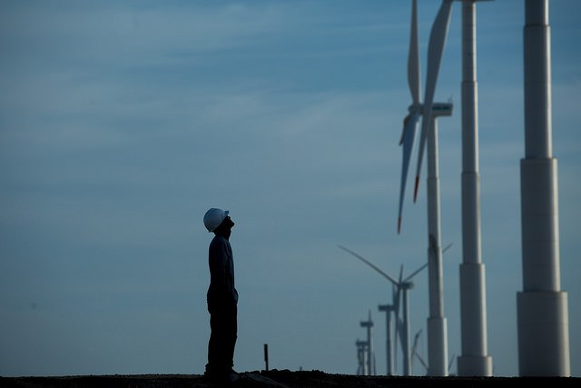
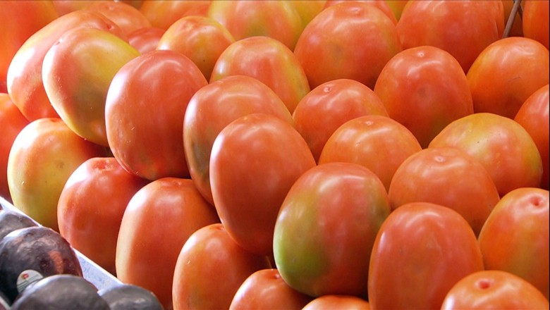

Notícias

Abertas inscrições para comitê de desenvolvimento sustentávelRepresentantes da sociedade civil e de municípios podem se inscrever, até 22 de março, para participar da Comissão Nacional de Objetivos de Desenvolvimento Sustentável (ODS).
Os editais para a seleção foram publicados no Diário Oficial da União da terça-feira (7).
08/03/2017


Sistema de cultivo gera tomate mais saudável e ajuda o meio ambienteNo Rio de Janeiro, um sistema de cultivo, que não é orgânico, traz muitas vantagens em relação ao convencional. Além de gerar um tomate mais saudável, ajuda a preservar o meio ambiente.
09/03/2017
Os jovens que cresceram no 'Vale da Morte' e lutam contra a poluição em Cubatão
Em 1977, a emissão de componentes químicos tóxicos como monóxido de carbono, benzeno, óxidos de enxofre e nitrogênio, hidrocarbonetos e material particulado (partículas de poluentes suspensas no ar) liberados em Cubatão ultrapassava mil toneladas por dia.
Em 1977, a emissão de componentes químicos tóxicos como monóxido de carbono, benzeno, óxidos de enxofre e nitrogênio, hidrocarbonetos e material particulado (partículas de poluentes suspensas no ar) liberados em Cubatão ultrapassava mil toneladas por dia.
10/03/2017

O presidente dos Estados Unidos, Donald Trump, enviará nesta semana ao Congresso sua proposta de orçamento para 2018, que inclui um aumento na despesa em defesa e cortes em meio ambiente, educação e habitação, informaram nesta segunda-feira os veículos de imprensa locais.
13/03/2017